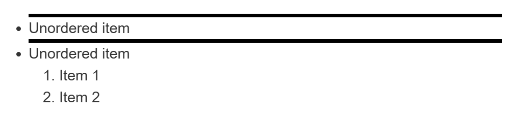
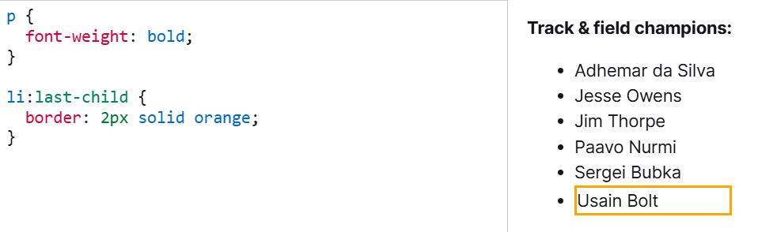
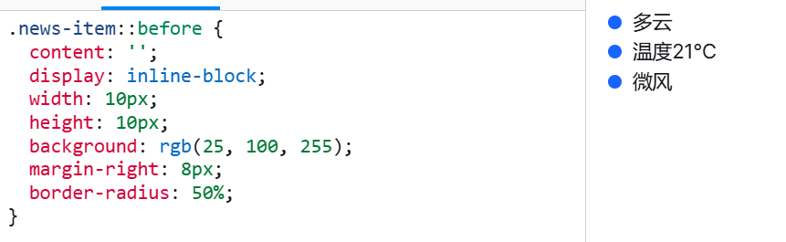
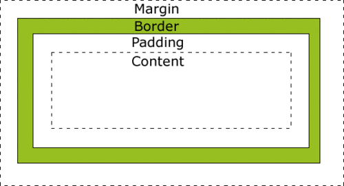

CSS
安利一个讲解盒模型的系列视频
导入方式
-
外部样式（最理想）：把CSS代码和HTML代码单独放在不同文件中，使用
<link>标签来引入 -
内部样式表:将css代码嵌入在html文件中，放在
<head>标签内部的<style>标签里。 -
行内样式表（可读性和可维护性非常差）
1 |
|
选择器
标签选择器
使用标签名作为选择器，同名标签具有相同样式。用逗号将不同选择器隔开，即可一次使用多个选择器。
1 | p, |
类选择器
选择所有 class 一致的标签，跨标签。
-
定义类选择器：.类名{ }
-
使用类选择器：标签添加 class=“类名”。一个标签可以使用多个类名，class属性值里不同类名用空格隔开。类名为多单词时可以用 ‘-’ 连接。
1 | <style> |
id 选择器
查找标签，差异化设置标签显示效果。一般配合JavaScript使用，很少用来设置CSS样式。
-
定义类选择器：#id名{ }
-
使用类选择器：标签添加 id=“id名”。
后代选择器
选中某元素的所有后代元素，后代选择器之间用空格隔开。
1 | <style> |
若只想选中某元素的子代元素，则使用子代关系选择器。
子代关系选择器
子代关系选择器是个大于号（>），只会在选择器选中直接子元素的时候匹配。
如下图，Item1 和 Item2 均未被选中。

1 | <style> |
伪类选择器
用于选择处于特定状态的元素，比如当鼠标悬浮在元素上面的时候。
-
:hover将鼠标悬停在元素上时激活 -
:link访问前 -
:visited访问后 -
:active点击元素时激活
1 | a:hover { |
结构伪类选择器
E:first-child 查找第一个E元素
E:last-child 查找最后一个E元素
E:nth-child(N) 查找第n个E元素，N = 2n 偶数， N = 2n + 1 奇数， N = n + 3 第三个以后的标签

伪元素选择器
创建伪元素，用来摆放装饰性内容。
E::before 在E元素里面最前面添加一个伪元素
E::after 在E元素里面最后面添加一个伪元素
-
必须设置
content属性，用来设置伪元素内容，若无内容引号留空 -
伪元素默认行内显示模式
-
权重和标签选择器相同

CSS特性
-
继承性：一些设置在父元素上的 CSS 属性是可以被子元素继承的，有些则不能。如果标签自己有样式，也不会继承父元素的样式。
-
层叠性：相同的属性会覆盖（后面覆盖前面），不同的属性会叠加。
-
优先级：一个标签使用多种选择器时，通常选择器范围越大的优先级越低。
!important > 行内样式 > id > 类名class > 标签 > 通配符选择器
Emmet 快速语法
HTML常用Emmet语法：
| 说明 | 标签结构 | Emmet |
|---|---|---|
| 类选择器 | <div class="box"></div> |
标签名.类名 |
| id选择器 | <div id="box"></div> |
标签名#id名 |
| 同级标签 | <div></div><p></p> |
div+p |
| 父子级标签 | <div><p></p></div> |
div>p |
| 多个相同标签 | <span>1</span><span>2</span><span>3</span> |
span*3 |
| 有内容的标签 | <div>内容</div> |
div{内容} |
CSS常用Emmet语法：
-
对于一些带有特定的属性值的CSS样式，只需输入CSS标签与属性值的首字母
-
参数别名：p → %, e → em, x → ex
例如：w100p → width: 100%
盒模型
组成及分类
CSS 中一个区块盒子由以下组成：
-
内容盒子：显示内容的区域；使用
inline-size和block-size或width和height等属性确定其大小。 -
内边距盒子：填充位于内容周围的空白处；使用
padding和相关属性确定其大小。 -
边框盒子：边框盒子包住内容和任何填充；使用
border和相关属性确定其大小。 -
外边距盒子：外边距是最外层，其包裹内容、内边距和边框，作为该盒子与其他元素之间的空白；使用
margin和相关属性确定其大小。
外边距：是盒子周围一圈看不到的空间。它会把其他元素退推离盒子。外边距属性值可以为正也可以为负。在盒子一侧设置负值会导致盒子和页面上的其他内容重叠。
使用 margin 属性一次性控制所有外边距，或者每边单独使用等价的普通属性控制
-
margin-top -
margin-right -
margin-bottom -
margin-left
内边距：位于边框和内容区域之间，用于将内容推离边框。与外边距不同，内边距不能为负数。
使用 padding 简写属性一次性控制元素所有边，或者每边单独使用等价的普通属性
-
padding-top -
padding-right -
padding-bottom -
padding-left

一个拥有 block （区块盒子）外部显示类型的盒子会表现出以下行为：
-
盒子会产生换行。
-
width和height属性可以发挥作用。 -
内边距、外边距和边框会将其他元素从当前盒子周围“推开”。
-
如果未指定
width，方框将沿行向扩展，以填充其容器中的可用空间。在大多数情况下，盒子会变得与其容器一样宽，占据可用空间的 100%。
某些 HTML 元素，如 <h1> 和 <p>，默认使用 block 作为外部显示类型。
一个拥有 inline （行内盒子）外部显示类型的盒子会表现出以下行为：
-
盒子不会产生换行。
-
width和height属性将不起作用。 -
垂直、水平方向的内边距、外边距以及边框会被应用但是不会把其他处于
inline状态的盒子推开。
某些 HTML 元素如 <a>、 <span>、 <em> 以及 <strong>，默认使用 inline 作为外部显示类型。
盒子还有内部显示类型，它决定了盒子内元素的布局方式。
补充
在 CSS 盒模型的默认定义中，我们设置的 width 和 height 默认仅适用于内容区域。如果元素有 padding 或 border，实际渲染时的宽高会比设定的值更大。这在进行页面布局，尤其是响应式布局时，可能会引发一些问题。
box-sizing 属性可以改变浏览器计算元素尺寸的方式。
-
content-box（默认值）：width和height仅作用于内容区域，padding和border会额外增加盒子尺寸。 -
border-box：width和height包含内容、padding和border，不会额外增加盒子尺寸。
当我们构建响应式页面时，通常会使用 width: 100% 让元素自适应父容器宽度。但如果使用content-box，额外的 padding 和 border 可能会导致盒子溢出，影响布局。使用border-box 可以避免这些问题。
内容溢出
盒子无法容纳下太多的内容时会发生溢出。
overflow 属性设置了元素溢出时所需的行为：
-
hidden：内容将被裁减以适应边距盒。不提供滚动条，也不支持允许用户滚动（例如通过拖拽或者使用滚轮）。 -
scroll：溢出滚动，无论是否溢出都显示滚动条。 -
auto：溢出滚动，只有溢出时才显示滚动条。
圆角
border-radius ：属性值为 数字+px/百分比，表示圆角半径。从左上角开始顺时针赋值。
常见应用：
-
正圆形状：给正方形盒子设置圆角属性值为宽高的一半或50%。
-
胶囊形状：给长方形盒子设置圆角属性值为盒子高度的一半。
阴影
box-shadow：属性值为x轴偏移量（必写）、y轴偏移量（必写）、模糊半径、扩散半径、颜色、内外阴影（默认外阴影，内阴影添加 inset）。
- 本文链接：cn/Web开发/Web开发02/
- 许可协议： 除特殊声明外，本站博文均采用 CC BY-NC-SA 3.0 CN 许可协议，转载请注明出处！